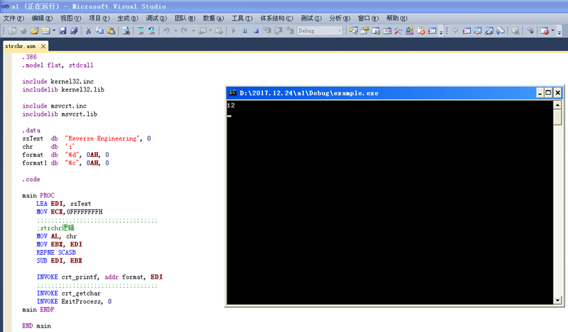
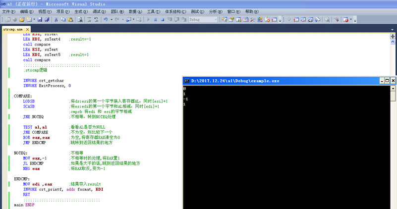
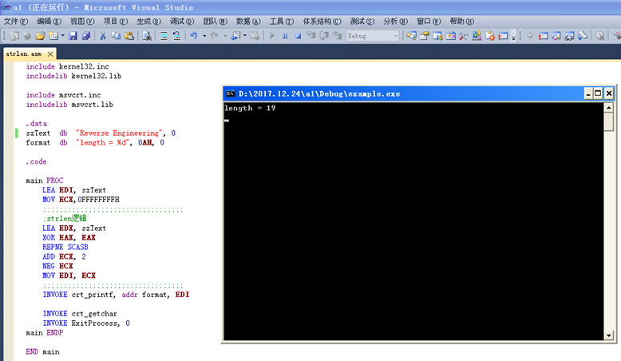
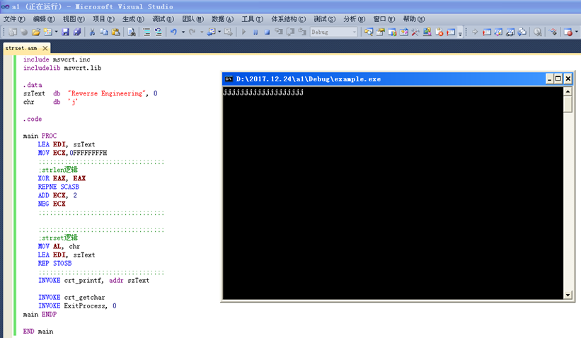

<!DOCTYPE html>


  <html class="light page-post">


<head><meta name="generator" content="Hexo 3.9.0">
  <meta charset="utf-8">
  
  <title>软件逆向工程上机作业 | LittleGhost&#39;s Blog</title>

  <meta name="viewport" content="width=device-width, initial-scale=1, maximum-scale=1">

  
    <meta name="keywords" content="逆向,">
  

  <meta name="description" content="实验一已知notepad.exe的各节区的RVA地址/RAW偏移范围如下：    节区名称 RVA起始地址 节区在内存中大小 RAW起始偏移量 节区在外存中大小    .text 00001000H 7748H 00000400H 7800H   .data 00009000H 1BA8H 00007C00H 800H   .rsrc 0000B000H 7F20H 00008400H 8000H">
<meta name="keywords" content="逆向">
<meta property="og:type" content="article">
<meta property="og:title" content="软件逆向工程上机作业">
<meta property="og:url" content="https://littleghost2016.github.io/2018/01/12/软件逆向工程上机作业/index.html">
<meta property="og:site_name" content="LittleGhost&#39;s Blog">
<meta property="og:description" content="实验一已知notepad.exe的各节区的RVA地址/RAW偏移范围如下：    节区名称 RVA起始地址 节区在内存中大小 RAW起始偏移量 节区在外存中大小    .text 00001000H 7748H 00000400H 7800H   .data 00009000H 1BA8H 00007C00H 800H   .rsrc 0000B000H 7F20H 00008400H 8000H">
<meta property="og:locale" content="zh-Hans">
<meta property="og:image" content="https://littleghost2016.github.io/2018/01/12/软件逆向工程上机作业/clip_image002.png">
<meta property="og:image" content="https://littleghost2016.github.io/2018/01/12/软件逆向工程上机作业/clip_image004.png">
<meta property="og:image" content="https://littleghost2016.github.io/2018/01/12/软件逆向工程上机作业/clip_image006.png">
<meta property="og:image" content="https://littleghost2016.github.io/2018/01/12/软件逆向工程上机作业/clip_image008.png">
<meta property="og:updated_time" content="2020-04-01T10:00:50.231Z">
<meta name="twitter:card" content="summary">
<meta name="twitter:title" content="软件逆向工程上机作业">
<meta name="twitter:description" content="实验一已知notepad.exe的各节区的RVA地址/RAW偏移范围如下：    节区名称 RVA起始地址 节区在内存中大小 RAW起始偏移量 节区在外存中大小    .text 00001000H 7748H 00000400H 7800H   .data 00009000H 1BA8H 00007C00H 800H   .rsrc 0000B000H 7F20H 00008400H 8000H">
<meta name="twitter:image" content="https://littleghost2016.github.io/2018/01/12/软件逆向工程上机作业/clip_image002.png">

  

  
    <link rel="icon" href="https://avatars2.githubusercontent.com/u/22980536?s=460&v=4">
  

  <link href="/css/styles.css?v=c114cbeddx" rel="stylesheet">


  
    <link rel="stylesheet" href="/css/personal-style.css">
  

  

  

  


  
    <script async src="https://busuanzi.ibruce.info/busuanzi/2.3/busuanzi.pure.mini.js"></script>
    <link rel="stylesheet" href="//cdn.bootcss.com/font-awesome/4.3.0/css/font-awesome.min.css">
  

</head>
</html>
<body>


  
    <span id="toolbox-mobile" class="toolbox-mobile">盒子</span>
  

  <div class="post-header CENTER">
   
  <div class="toolbox">
    <a class="toolbox-entry" href="/">
      <span class="toolbox-entry-text">盒子</span>
      <i class="icon-angle-down"></i>
      <i class="icon-home"></i>
    </a>
    <ul class="list-toolbox">
      
        <li class="item-toolbox">
          <a
            class="CIRCLE"
            href="/archives/"
            rel="noopener noreferrer"
            target="_self"
            >
            文章
          </a>
        </li>
      
        <li class="item-toolbox">
          <a
            class="CIRCLE"
            href="/category/"
            rel="noopener noreferrer"
            target="_self"
            >
            分类
          </a>
        </li>
      
        <li class="item-toolbox">
          <a
            class="CIRCLE"
            href="/tag/"
            rel="noopener noreferrer"
            target="_self"
            >
            标签
          </a>
        </li>
      
        <li class="item-toolbox">
          <a
            class="CIRCLE"
            href="/link/"
            rel="noopener noreferrer"
            target="_self"
            >
            友链
          </a>
        </li>
      
        <li class="item-toolbox">
          <a
            class="CIRCLE"
            href="/about/"
            rel="noopener noreferrer"
            target="_self"
            >
            关于我
          </a>
        </li>
      
        <li class="item-toolbox">
          <a
            class="CIRCLE"
            href="/search/"
            rel="noopener noreferrer"
            target="_self"
            >
            搜索
          </a>
        </li>
      
    </ul>
  </div>


</div>


  <div id="toc" class="toc-article">
    <strong class="toc-title">文章目录</strong>
    <ol class="toc"><li class="toc-item toc-level-1"><a class="toc-link" href="#实验一"><span class="toc-text">实验一</span></a></li><li class="toc-item toc-level-1"><a class="toc-link" href="#实验二"><span class="toc-text">实验二</span></a><ol class="toc-child"><li class="toc-item toc-level-2"><a class="toc-link" href="#实验要求"><span class="toc-text">实验要求:</span></a></li><li class="toc-item toc-level-2"><a class="toc-link" href="#实验过程及结果"><span class="toc-text">实验过程及结果:</span></a><ol class="toc-child"><li class="toc-item toc-level-3"><a class="toc-link" href="#strchr"><span class="toc-text">strchr</span></a></li><li class="toc-item toc-level-3"><a class="toc-link" href="#strcmp"><span class="toc-text">strcmp</span></a></li><li class="toc-item toc-level-3"><a class="toc-link" href="#strlen"><span class="toc-text">strlen</span></a></li><li class="toc-item toc-level-3"><a class="toc-link" href="#strset"><span class="toc-text">strset</span></a></li></ol></li></ol></li><li class="toc-item toc-level-1"><a class="toc-link" href="#实验三"><span class="toc-text">实验三</span></a><ol class="toc-child"><li class="toc-item toc-level-2"><a class="toc-link" href="#实验内容"><span class="toc-text">实验内容:</span></a></li><li class="toc-item toc-level-2"><a class="toc-link" href="#实验过程及结果-1"><span class="toc-text">实验过程及结果:</span></a><ol class="toc-child"><li class="toc-item toc-level-3"><a class="toc-link" href="#代码"><span class="toc-text">代码</span></a></li></ol></li></ol></li><li class="toc-item toc-level-1"><a class="toc-link" href="#实验四"><span class="toc-text">实验四</span></a><ol class="toc-child"><li class="toc-item toc-level-2"><a class="toc-link" href="#InjectDll-cpp"><span class="toc-text">InjectDll.cpp</span></a><ol class="toc-child"><li class="toc-item toc-level-3"><a class="toc-link" href="#tmain"><span class="toc-text">_tmain</span></a></li><li class="toc-item toc-level-3"><a class="toc-link" href="#InjectDll"><span class="toc-text">InjectDll</span></a></li><li class="toc-item toc-level-3"><a class="toc-link" href="#SetPrivilege"><span class="toc-text">SetPrivilege</span></a></li></ol></li><li class="toc-item toc-level-2"><a class="toc-link" href="#MyDll-cpp"><span class="toc-text">MyDll.cpp</span></a><ol class="toc-child"><li class="toc-item toc-level-3"><a class="toc-link" href="#DllMain"><span class="toc-text">DllMain</span></a></li><li class="toc-item toc-level-3"><a class="toc-link" href="#ThreadProc"><span class="toc-text">ThreadProc</span></a></li></ol></li><li class="toc-item toc-level-2"><a class="toc-link" href="#MyDll2-cpp"><span class="toc-text">MyDll2.cpp</span></a><ol class="toc-child"><li class="toc-item toc-level-3"><a class="toc-link" href="#DllMain-1"><span class="toc-text">DllMain</span></a></li></ol></li><li class="toc-item toc-level-2"><a class="toc-link" href="#EjectDll-cpp"><span class="toc-text">EjectDll.cpp</span></a><ol class="toc-child"><li class="toc-item toc-level-3"><a class="toc-link" href="#tmain-1"><span class="toc-text">_tmain</span></a></li><li class="toc-item toc-level-3"><a class="toc-link" href="#FindProcessID"><span class="toc-text">FindProcessID</span></a></li><li class="toc-item toc-level-3"><a class="toc-link" href="#SetPrivilege-1"><span class="toc-text">SetPrivilege</span></a></li><li class="toc-item toc-level-3"><a class="toc-link" href="#EjectDll"><span class="toc-text">EjectDll</span></a></li></ol></li><li class="toc-item toc-level-2"><a class="toc-link" href="#TestHook-cpp"><span class="toc-text">TestHook.cpp</span></a></li></ol></li></ol>
  </div>


<div class="content content-post CENTER">
   <article id="post-软件逆向工程上机作业" class="article article-type-post" itemprop="blogPost">
  <header class="article-header">
    <h1 class="post-title">软件逆向工程上机作业</h1>

    <div class="article-meta">
      <span>
        <i class="icon-calendar"></i>
        <span>2018.01.12</span>
      </span>

      
        <span class="article-author">
          <i class="icon-user"></i>
          <span>LittleGhost</span>
        </span>
      

      
  <span class="article-category">
    <i class="icon-list"></i>
    <a class="article-category-link" href="/categories/技术/">技术</a>
  </span>


      

      
      <i class="fa fa-eye"></i> 
        <span id="busuanzi_container_page_pv">
           &nbsp热度 <span id="busuanzi_value_page_pv">
           <i class="fa fa-spinner fa-spin"></i></span>℃
        </span>
      
      
    </div>
  </header>

  <div class="article-content">
    
      <h1 id="实验一"><a href="#实验一" class="headerlink" title="实验一"></a>实验一</h1><p>已知notepad.exe的各节区的RVA地址/RAW偏移范围如下：</p>
<table>
<thead>
<tr>
<th>节区名称</th>
<th>RVA起始地址</th>
<th>节区在内存中大小</th>
<th>RAW起始偏移量</th>
<th>节区在外存中大小</th>
</tr>
</thead>
<tbody><tr>
<td>.text</td>
<td>00001000H</td>
<td>7748H</td>
<td>00000400H</td>
<td>7800H</td>
</tr>
<tr>
<td>.data</td>
<td>00009000H</td>
<td>1BA8H</td>
<td>00007C00H</td>
<td>800H</td>
</tr>
<tr>
<td>.rsrc</td>
<td>0000B000H</td>
<td>7F20H</td>
<td>00008400H</td>
<td>8000H</td>
</tr>
</tbody></table>
<p>PE头中的DataDirectory[1]这一项的RAW偏移在160H～167H。</p>
<ol>
<li>解析notepad.exe的IMAGE_IMPORT_DESCRIPTOR数组的内容，填充下面表格：</li>
</ol>
<table>
<thead>
<tr>
<th>OriginalFirstThunk</th>
<th></th>
<th>Name</th>
<th></th>
<th></th>
<th>FirstThunk</th>
<th></th>
</tr>
</thead>
<tbody><tr>
<td>RVA</td>
<td>RAW</td>
<td>RVA</td>
<td>RAW</td>
<td>库文件名</td>
<td>RVA</td>
<td>RAW</td>
</tr>
<tr>
<td>00007990H</td>
<td>00006A04H</td>
<td>00007AACH</td>
<td>00006EACH</td>
<td>comdlg32.dll</td>
<td>000012C4H</td>
<td>000006C4H</td>
</tr>
<tr>
<td>00007840H</td>
<td>00006C40H</td>
<td>00007AFAH</td>
<td>00006EFAH</td>
<td>SHELL32.dll</td>
<td>00001174H</td>
<td>00000574H</td>
</tr>
<tr>
<td>00007980H</td>
<td>00006D80H</td>
<td>00007B3AH</td>
<td>00006F3AH</td>
<td>WINSPOOL.DRV</td>
<td>000012B4H</td>
<td>000006B4H</td>
</tr>
<tr>
<td>000076ECH</td>
<td>00006AECH</td>
<td>00007B5EH</td>
<td>00006F5EH</td>
<td>COMCTL32.dll</td>
<td>00001020H</td>
<td>00000420H</td>
</tr>
<tr>
<td>000079B8H</td>
<td>00006DB8H</td>
<td>00007C76H</td>
<td>00007076H</td>
<td>msvcrt.dll</td>
<td>000012ECH</td>
<td>000006ECH</td>
</tr>
<tr>
<td>000076CCH</td>
<td>00006ACCH</td>
<td>00007D08H</td>
<td>00007108H</td>
<td>ADVAPI32.dll</td>
<td>00001000H</td>
<td>00000400H</td>
</tr>
<tr>
<td>00007758H</td>
<td>00006B58H</td>
<td>000080ECH</td>
<td>000074ECH</td>
<td>KERNEL32.dll</td>
<td>0000108CH</td>
<td>0000048CH</td>
</tr>
<tr>
<td>000076F4H</td>
<td>00006AF4H</td>
<td>0000825EH</td>
<td>0000765EH</td>
<td>GDI32.dll</td>
<td>00001028H</td>
<td>00000428</td>
</tr>
<tr>
<td>00007854H</td>
<td>00006C54H</td>
<td>0000873CH</td>
<td>00007B3CH</td>
<td>USER32.dll</td>
<td>00001188H</td>
<td>00000588H</td>
</tr>
</tbody></table>
<ol start="2">
<li>查找所使用的KERNEL32.dll库的第一个函数的名称。</li>
</ol>
<p>GetCurrentThreadId  （RAW:00007424）</p>
<ol start="3">
<li>查找该函数在IAT中的IMAGE_THUNK_DATA32结构的内容。</li>
</ol>
<p>7C8097B8</p>
<ol start="4">
<li>用OllyDbg调试notepad.exe，找出该函数被装载到的实际内存地址，比较其与（3）的IMAGE_THUNK_DATA32结构内容是否相同。解释为什么。</li>
</ol>
<p>在不同的电脑、不同的操作系统中这个值都不相同，IAT不相同，所以实际函数被装载到内存地址也不相同。</p>
<h1 id="实验二"><a href="#实验二" class="headerlink" title="实验二"></a>实验二</h1><p>用x86汇编语言实现以下C语言函数功能</p>
<table>
<thead>
<tr>
<th>函数</th>
<th>功能</th>
</tr>
</thead>
<tbody><tr>
<td>unsigned intstrlen(char *s);</td>
<td>计算给定字符串的长度，不包括’\0’在内</td>
</tr>
<tr>
<td>char <em>strchr(const char</em> s,charc);</td>
<td>查找字符串s中首次出现字符c的位置，返回首次出现c的位置的指针，如果s中不存在c则返回0</td>
</tr>
<tr>
<td>intstrcmp(const char *s1,const char *s2);</td>
<td>当s1&lt;s2时，返回为-1；当s1==s2时，返回值= 0；当s1&gt;s2时，返回1。</td>
</tr>
<tr>
<td>char *strset(char *s, char c);</td>
<td>把字符串s中的所有字符都设置成字符c</td>
</tr>
</tbody></table>
<h2 id="实验要求"><a href="#实验要求" class="headerlink" title="实验要求:"></a>实验要求:</h2><ol>
<li>学习用MASM32 + Visual Studio进行汇编程序开发的基本方法。</li>
<li>在老师提供的程序框架下，依次实现上表中的4个函数功能。</li>
<li>完成上机报告（word或pdf），详细陈述程序设计思路和关键语句含义。</li>
</ol>
<h2 id="实验过程及结果"><a href="#实验过程及结果" class="headerlink" title="实验过程及结果:"></a>实验过程及结果:</h2><h3 id="strchr"><a href="#strchr" class="headerlink" title="strchr"></a>strchr</h3><p>实验思路：使用SCASB将给定字符串诸位与chr进行比较，若一样则记录当前地址，要计算的偏移量为当前地址与开始地址的差值。</p>
<p>代码及注释：</p>
<figure class="highlight plain"><table><tr><td class="code"><pre><span class="line">; strchr.asm</span><br><span class="line"></span><br><span class="line">.386</span><br><span class="line">.model flat, stdcall</span><br><span class="line"></span><br><span class="line">include kernel32.inc</span><br><span class="line">includelib kernel32.lib</span><br><span class="line"></span><br><span class="line">include msvcrt.inc</span><br><span class="line">includelib msvcrt.lib</span><br><span class="line"></span><br><span class="line">.data</span><br><span class="line">szText  db  &quot;Reverse Engineering&quot;, 0</span><br><span class="line">chr     db  &apos;i&apos;</span><br><span class="line">format  db  &quot;%d&quot;, 0AH, 0</span><br><span class="line"></span><br><span class="line">.code</span><br><span class="line"></span><br><span class="line">main PROC</span><br><span class="line">    LEA EDI, szText             ;将字符串偏移地址送给EDI</span><br><span class="line">    MOV ECX,0FFFFFFFFH          ;ECX置为-1</span><br><span class="line">    ;;;;;;;;;;;;;;;;;;;;;;;;;;;;;;;;;;</span><br><span class="line">    ;strchr逻辑</span><br><span class="line">    ;SCAS:将AL/AX/EAX与[EDI]比较，并对EDI自增/自减</span><br><span class="line">    MOV AL, chr                 ;将要比较的字符&apos;i&apos;送给AL</span><br><span class="line">    MOV EBX, EDI                ;保存szText首地址</span><br><span class="line">    REPNE SCASB                 ;执行SCASB逻辑</span><br><span class="line">    SUB EDI, EBX                ;&apos;i&apos;在字符串中的位置=EDI-EBX</span><br><span class="line"></span><br><span class="line">    INVOKE crt_printf, addr format, EDI;输出结果</span><br><span class="line">    ;;;;;;;;;;;;;;;;;;;;;;;;;;;;;;;;;;</span><br><span class="line">    INVOKE crt_getchar</span><br><span class="line">    INVOKE ExitProcess, 0</span><br><span class="line">main ENDP</span><br><span class="line"></span><br><span class="line">END main</span><br></pre></td></tr></table></figure>

<p></p>
<h3 id="strcmp"><a href="#strcmp" class="headerlink" title="strcmp"></a>strcmp</h3><p>实验思路：使用SCASB和STOSB将两个字符串逐位进行比较。逐个比较字符的过程中，若不相等则根据实际的大小关系得出结果；若为空则比较完成，跳转到返回结果初；若相等则继续比较下一个字符。</p>
<p>代码及注释：</p>
<figure class="highlight plain"><table><tr><td class="code"><pre><span class="line">; strcmp.asm</span><br><span class="line"></span><br><span class="line">.386</span><br><span class="line">.model flat, stdcall</span><br><span class="line"></span><br><span class="line">include kernel32.inc</span><br><span class="line">includelib kernel32.lib</span><br><span class="line"></span><br><span class="line">include msvcrt.inc</span><br><span class="line">includelib msvcrt.lib</span><br><span class="line"></span><br><span class="line">.data</span><br><span class="line">format      db  &quot;%d&quot;, 0AH, 0</span><br><span class="line">szText      db  &quot;Reverse Engineering&quot;, 0</span><br><span class="line">szText2     db  &quot;Reverse Engineering&quot;, 0    ;szText==szText2</span><br><span class="line">szText3     db  &quot;Reverse Eng&quot;, 0            ;szText&gt;szText3</span><br><span class="line">szText4     db  &quot;Reverse Engj&quot;, 0           ;szText&lt;szText4</span><br><span class="line">szText5     db  &quot;Reverse Engh&quot;, 0           ;szText&gt;szText5</span><br><span class="line"></span><br><span class="line">.code</span><br><span class="line"></span><br><span class="line">main PROC</span><br><span class="line">;重复将四次比较结果输出</span><br><span class="line">    LEA ESI, szText</span><br><span class="line">    LEA EDI, szText2    ;result=0</span><br><span class="line">    call compare</span><br><span class="line">    LEA ESI, szText</span><br><span class="line">    LEA EDI, szText3    ;result=1</span><br><span class="line">    call compare</span><br><span class="line">    LEA ESI, szText</span><br><span class="line">    LEA EDI, szText4    ;result=-1</span><br><span class="line">    call compare</span><br><span class="line">    LEA ESI, szText</span><br><span class="line">    LEA EDI, szText5    ;result=1</span><br><span class="line">    call compare</span><br><span class="line">    ;;;;;;;;;;;;;;;;;;;;;;;;;;;;;;;;;;</span><br><span class="line">    ;strcmp逻辑</span><br><span class="line"></span><br><span class="line">    INVOKE crt_getchar</span><br><span class="line">    INVOKE ExitProcess, 0</span><br><span class="line"></span><br><span class="line">COMPARE:</span><br><span class="line">    LODSB               ;将ds:esi的第一个字节装入寄存器AL，同时[esi]+1</span><br><span class="line">    SCASB               ;将es:edi的第一个字节和AL相减，同时[edi]+1</span><br><span class="line">                        ;cmpsb 将edi 和 esi的字节相减</span><br><span class="line">    JNE NOTEQ           ;不相等，转到NOTEQ处理</span><br><span class="line">             </span><br><span class="line">    TEST AL, AL         ;看看AL是否为NULL</span><br><span class="line">    JNE COMPARE         ;不为空，则比较下一个</span><br><span class="line">    XOR EAX, EAX        ;为空,将寄存器EAX清空为0</span><br><span class="line">    JMP ENDCMP          ;跳转到返回结果的地方</span><br><span class="line"></span><br><span class="line">NOTEQ:                  ;不相等</span><br><span class="line">    MOV EAX, -1         ;不相等时的处理,将EAX置-1</span><br><span class="line">    JL ENDCMP           ;如果是大于的话,跳到返回结果的地方</span><br><span class="line">    NEG EAX             ;将EAX取反,变为1</span><br><span class="line">             </span><br><span class="line">ENDCMP:       </span><br><span class="line">    MOV EDI, EAX        ;结果存入result</span><br><span class="line">    INVOKE crt_printf, addr format, EDI</span><br><span class="line">    RET</span><br><span class="line">    ;;;;;;;;;;;;;;;;;;;;;;;;;;;;;;;;;;</span><br><span class="line">main ENDP</span><br><span class="line"></span><br><span class="line">END main</span><br></pre></td></tr></table></figure>

<p></p>
<h3 id="strlen"><a href="#strlen" class="headerlink" title="strlen"></a>strlen</h3><p>实验思路：依次比较字符串每个字符是否为空（空位字符串结束标志），在二进制表示下，计算ECX的值，最后将结果放入EDI中。</p>
<p>代码及注释：</p>
<figure class="highlight plain"><table><tr><td class="code"><pre><span class="line">; strlen.asm</span><br><span class="line"></span><br><span class="line">.386</span><br><span class="line">.model flat, stdcall</span><br><span class="line"></span><br><span class="line">include kernel32.inc</span><br><span class="line">includelib kernel32.lib</span><br><span class="line"></span><br><span class="line">include msvcrt.inc</span><br><span class="line">includelib msvcrt.lib</span><br><span class="line"></span><br><span class="line">.data</span><br><span class="line">szText  db  &quot;Reverse Engineering&quot;, 0</span><br><span class="line">format  db  &quot;length = %d&quot;, 0AH, 0</span><br><span class="line"></span><br><span class="line">.code</span><br><span class="line"></span><br><span class="line">main PROC</span><br><span class="line">    LEA EDI, szText             ;将字符串偏移地址送给EDI</span><br><span class="line">    MOV ECX,0FFFFFFFFH          ;ECX置为-1</span><br><span class="line">    ;;;;;;;;;;;;;;;;;;;;;;;;;;;;;;;;;;</span><br><span class="line">    ;strlen逻辑</span><br><span class="line">    XOR EAX, EAX                ;EAX清零</span><br><span class="line">    REPNE SCASB                 ;执行SCASB逻辑，ECX=-1-(字符串长度+1)</span><br><span class="line">    ADD ECX, 2                  ;ECX=-(字符串长度)</span><br><span class="line">    NEG ECX                     ;ECX=字符串长度</span><br><span class="line">    MOV EDI, ECX                ;将结果送到EDI</span><br><span class="line">    ;;;;;;;;;;;;;;;;;;;;;;;;;;;;;;;;;;</span><br><span class="line">    INVOKE crt_printf, addr format, EDI;输出结果</span><br><span class="line"></span><br><span class="line">    INVOKE crt_getchar</span><br><span class="line">    INVOKE ExitProcess, 0</span><br><span class="line">main ENDP</span><br><span class="line"></span><br><span class="line">END main</span><br></pre></td></tr></table></figure>

<p></p>
<h3 id="strset"><a href="#strset" class="headerlink" title="strset"></a>strset</h3><p>实验思路：先用strlen将字符串长度读取并存入ECX中，再用STOSB将chr所存放的字符逐位替换原字符串中的字符。</p>
<p>关键代码及注释：</p>
<figure class="highlight plain"><table><tr><td class="code"><pre><span class="line">; strset.asm</span><br><span class="line"></span><br><span class="line">.386</span><br><span class="line">.model flat, stdcall</span><br><span class="line"></span><br><span class="line">include kernel32.inc</span><br><span class="line">includelib kernel32.lib</span><br><span class="line"></span><br><span class="line">include msvcrt.inc</span><br><span class="line">includelib msvcrt.lib</span><br><span class="line"></span><br><span class="line">.data</span><br><span class="line">szText  db  &quot;Reverse Engineering&quot;, 0</span><br><span class="line">chr     db  &apos;j&apos;</span><br><span class="line"></span><br><span class="line">.code</span><br><span class="line"></span><br><span class="line">main PROC</span><br><span class="line">    LEA EDI, szText             ;将字符串偏移地址送给EDI</span><br><span class="line">    MOV ECX,0FFFFFFFFH          ;ECX置为-1</span><br><span class="line">    ;;;;;;;;;;;;;;;;;;;;;;;;;;;;;;;;;;</span><br><span class="line">    ;strlen逻辑</span><br><span class="line">    XOR EAX, EAX                ;EAX清零</span><br><span class="line">    REPNE SCASB                 ;执行SCASB逻辑，ECX=-1-(字符串长度+1)</span><br><span class="line">    ADD ECX, 2                  ;ECX=-(字符串长度)</span><br><span class="line">    NEG ECX                     ;ECX=字符串长度</span><br><span class="line">    ;;;;;;;;;;;;;;;;;;;;;;;;;;;;;;;;;;</span><br><span class="line"></span><br><span class="line">    ;;;;;;;;;;;;;;;;;;;;;;;;;;;;;;;;;;</span><br><span class="line">    ;strset逻辑</span><br><span class="line">    ;STOS:将AL/AX/EAX的值写入EDI指向的内存</span><br><span class="line">    MOV AL, chr                 ;将要写入的字符串送到AL</span><br><span class="line">    LEA EDI, szText             ;重新将字符串偏移地址送给EDI</span><br><span class="line">    REP STOSB                   ;执行STOSB逻辑</span><br><span class="line">    ;;;;;;;;;;;;;;;;;;;;;;;;;;;;;;;;;;</span><br><span class="line">    INVOKE crt_printf, addr szText;输出结果</span><br><span class="line"></span><br><span class="line">    INVOKE crt_getchar</span><br><span class="line">    INVOKE ExitProcess, 0</span><br><span class="line">main ENDP</span><br><span class="line"></span><br><span class="line">END main</span><br></pre></td></tr></table></figure>

<p></p>
<h1 id="实验三"><a href="#实验三" class="headerlink" title="实验三"></a>实验三</h1><h2 id="实验内容"><a href="#实验内容" class="headerlink" title="实验内容:"></a>实验内容:</h2><p>修改第6章的HookDll.cpp，钩取对notepad的输入，使得：</p>
<ol>
<li>输入文本仍能正常显示；</li>
<li>所有输入文本能够记录到input.txt文件中。</li>
</ol>
<h2 id="实验过程及结果-1"><a href="#实验过程及结果-1" class="headerlink" title="实验过程及结果:"></a>实验过程及结果:</h2><p>实验思路：原HookDll.cpp的关键回调函数如下，主要更改代码以实现功能的地方用“**”标注：</p>
<figure class="highlight c++"><table><tr><td class="code"><pre><span class="line"><span class="function">LRESULT CALLBACK <span class="title">KeyboardProc</span><span class="params">(<span class="keyword">int</span> nCode, WPARAM wParam, LPARAM lParam)</span></span>&#123;</span><br><span class="line">……</span><br><span class="line">        <span class="keyword">if</span>( !_stricmp(p + <span class="number">1</span>, <span class="string">"notepad.exe"</span>) )</span><br><span class="line">                 <span class="keyword">return</span> <span class="number">1</span>;</span><br><span class="line">                 <span class="comment">//**主要更改的逻辑在这里**</span></span><br><span class="line">……</span><br><span class="line">    <span class="comment">// 当前进程不是notepad.exe，将消息传递给下一个钩子</span></span><br><span class="line">        <span class="keyword">return</span> CallNextHookEx(g_hHook, nCode, wParam, lParam);</span><br><span class="line">&#125;</span><br></pre></td></tr></table></figure>

<p><code>return 1;</code>的意思是：如果进程是<code>notepad.exe</code>，则不会将消息传递给下一个钩子，而实验要求消息可以正常显示出来，并且将所打印的消息记录到另一个文件夹中，则可以将问题分解为2个：</p>
<ol>
<li><p>将键盘输入的消息记录到某处，并且不会在这个时候return 1而是继续将消息传递给下一个钩子。解决方案：此回调函数的wParam参数包含了WPARAM类型的按键的虚键码，将此参数的内容转换成可读的字符类型即可。</p>
</li>
<li><p>将保存着wParam内容的参数用文件读写的方式以”a”的方式写入，即可在一个文件夹内保存。解决方案：使用C的fopen函数或者Windows编程中的CreateFile函数</p>
<blockquote>
<p>参考来自：<a href="https://msdn.microsoft.com/en-us/library/windows/desktop/aa363858(v=vs.85).aspx" target="_blank" rel="noopener">https://msdn.microsoft.com/en-us/library/windows/desktop/aa363858(v=vs.85).aspx</a></p>
</blockquote>
</li>
</ol>
<h3 id="代码"><a href="#代码" class="headerlink" title="代码"></a>代码</h3><figure class="highlight c++"><table><tr><td class="code"><pre><span class="line"><span class="meta">#<span class="meta-keyword">include</span> <span class="meta-string">"stdio.h"</span></span></span><br><span class="line"><span class="meta">#<span class="meta-keyword">include</span> <span class="meta-string">"windows.h"</span></span></span><br><span class="line"><span class="meta">#<span class="meta-keyword">include</span> <span class="meta-string">"tchar.h"</span></span></span><br><span class="line"><span class="meta">#<span class="meta-keyword">include</span> <span class="meta-string">"ctype.h"</span></span></span><br><span class="line"></span><br><span class="line">HINSTANCE g_hInstance = <span class="literal">NULL</span>;</span><br><span class="line">HHOOK g_hHook = <span class="literal">NULL</span>;</span><br><span class="line">HWND g_hWnd = <span class="literal">NULL</span>;</span><br><span class="line"></span><br><span class="line"><span class="function">BOOL WINAPI <span class="title">DllMain</span><span class="params">(HINSTANCE hinstDLL, DWORD dwReason, LPVOID lpvReserved)</span></span></span><br><span class="line"><span class="function"></span>&#123;</span><br><span class="line">	<span class="keyword">switch</span> (dwReason)</span><br><span class="line">	&#123;</span><br><span class="line">	<span class="keyword">case</span> DLL_PROCESS_ATTACH:</span><br><span class="line">		g_hInstance = hinstDLL;</span><br><span class="line">		<span class="keyword">break</span>;</span><br><span class="line"></span><br><span class="line">	<span class="keyword">case</span> DLL_PROCESS_DETACH:</span><br><span class="line">		<span class="keyword">break</span>;</span><br><span class="line">	&#125;</span><br><span class="line">	<span class="keyword">return</span> TRUE;</span><br><span class="line">&#125;</span><br><span class="line"></span><br><span class="line"><span class="function">LRESULT CALLBACK <span class="title">KeyboardProc</span><span class="params">(<span class="keyword">int</span> nCode, WPARAM wParam, LPARAM lParam)</span></span></span><br><span class="line"><span class="function"></span>&#123;</span><br><span class="line">	<span class="keyword">char</span> szPath[MAX_PATH] = &#123;</span><br><span class="line">		<span class="number">0</span>,</span><br><span class="line">	&#125;;</span><br><span class="line">	<span class="keyword">char</span> *p = <span class="literal">NULL</span>;</span><br><span class="line">	<span class="keyword">char</span> ch;  <span class="comment">//ch存放按键的内容</span></span><br><span class="line">	FILE *fp; <span class="comment">//打开文件流</span></span><br><span class="line">	<span class="comment">//ToAscii函数参数</span></span><br><span class="line">	byte ks[<span class="number">256</span>];</span><br><span class="line">	GetKeyboardState(ks); <span class="comment">//函数功能:该函数将256个虚拟键的状态拷贝到指定的缓冲区中</span></span><br><span class="line">	WORD w;</span><br><span class="line">	UINT scan = <span class="number">0</span>;</span><br><span class="line"></span><br><span class="line">	<span class="keyword">if</span> (nCode &gt;= <span class="number">0</span>)</span><br><span class="line">	&#123;</span><br><span class="line">		<span class="comment">// bit 31 : 0 =&gt; press, 1 =&gt; release</span></span><br><span class="line">		<span class="keyword">if</span> (!(lParam &amp; <span class="number">0x80000000</span>))</span><br><span class="line">		&#123;</span><br><span class="line">			GetModuleFileNameA(<span class="literal">NULL</span>, szPath, MAX_PATH);</span><br><span class="line">			p = <span class="built_in">strrchr</span>(szPath, <span class="string">'\\'</span>);</span><br><span class="line">			<span class="comment">//若加载当前DLL的进程的可执行文件名称为notepad.exe，则消息不会传递给下一个钩子</span></span><br><span class="line">			<span class="keyword">if</span> (!_stricmp(p + <span class="number">1</span>, <span class="string">"notepad.exe"</span>))</span><br><span class="line">			&#123;</span><br><span class="line">				ToAscii(wParam, scan, ks, &amp;w, <span class="number">0</span>);</span><br><span class="line">				<span class="comment">//函数功能：该函数将指定的虚拟键码和键盘状态翻译为相应的字符或字符串。</span></span><br><span class="line">				<span class="comment">//该函数使用由给定的键盘布局句柄标识的物理键盘布局和输入语言来翻译代码。</span></span><br><span class="line">				<span class="comment">//函数原型：int ToAscii(UINT uVirtKey,UINT uScanCode,PBYTE lpKeyState,LPWORD lpChar,UINT uFlags);</span></span><br><span class="line">				ch = (<span class="keyword">char</span>)w;</span><br><span class="line"></span><br><span class="line">				fp = fopen(<span class="string">"input.txt"</span>, <span class="string">"a"</span>); <span class="comment">//打开流</span></span><br><span class="line">				<span class="built_in">fprintf</span>(fp, <span class="string">"%c"</span>, ch);		  <span class="comment">//写入文件操作</span></span><br><span class="line">				fclose(fp);					  <span class="comment">//关闭流</span></span><br><span class="line">											  <span class="comment">//return 1;</span></span><br><span class="line">			&#125;</span><br><span class="line">		&#125;</span><br><span class="line">	&#125;</span><br><span class="line">	<span class="comment">// 当前进程不是notepad.exe，将消息传递给下一个钩子</span></span><br><span class="line">	<span class="keyword">return</span> CallNextHookEx(g_hHook, nCode, wParam, lParam);</span><br><span class="line">&#125;</span><br><span class="line"></span><br><span class="line"><span class="meta">#<span class="meta-keyword">ifdef</span> __cplusplus</span></span><br><span class="line"><span class="keyword">extern</span> <span class="string">"C"</span></span><br><span class="line">&#123;</span><br><span class="line"><span class="meta">#<span class="meta-keyword">endif</span></span></span><br><span class="line">	__declspec(dllexport) <span class="function"><span class="keyword">void</span> <span class="title">HookStart</span><span class="params">()</span></span></span><br><span class="line"><span class="function">	</span>&#123;</span><br><span class="line">		g_hHook = SetWindowsHookEx(WH_KEYBOARD, KeyboardProc, g_hInstance, <span class="number">0</span>);</span><br><span class="line">	&#125;</span><br><span class="line"></span><br><span class="line">	__declspec(dllexport) <span class="function"><span class="keyword">void</span> <span class="title">HookStop</span><span class="params">()</span></span></span><br><span class="line"><span class="function">	</span>&#123;</span><br><span class="line">		<span class="keyword">if</span> (g_hHook)</span><br><span class="line">		&#123;</span><br><span class="line">			UnhookWindowsHookEx(g_hHook);</span><br><span class="line">			g_hHook = <span class="literal">NULL</span>;</span><br><span class="line">		&#125;</span><br><span class="line">	&#125;</span><br><span class="line"><span class="meta">#<span class="meta-keyword">ifdef</span> __cplusplus</span></span><br><span class="line">&#125;</span><br><span class="line"><span class="meta">#<span class="meta-keyword">endif</span></span></span><br></pre></td></tr></table></figure>

<h1 id="实验四"><a href="#实验四" class="headerlink" title="实验四"></a>实验四</h1><h2 id="InjectDll-cpp"><a href="#InjectDll-cpp" class="headerlink" title="InjectDll.cpp"></a>InjectDll.cpp</h2><h3 id="tmain"><a href="#tmain" class="headerlink" title="_tmain"></a>_tmain</h3><ul>
<li>检查输入参数正确性</li>
<li>为程序设置权限</li>
<li>执行注入的操作</li>
</ul>
<h3 id="InjectDll"><a href="#InjectDll" class="headerlink" title="InjectDll"></a>InjectDll</h3><ul>
<li>获得ID对应目标进程句柄<code>[OpenProcess]</code></li>
<li>将szDllPath路径字符串写入在目标进程地址空间中开辟一块存储空间存放DLL路径名(szDllPath)<code>[VirtualAllocEx/WriteProcessMemory]</code></li>
<li>获取当前进程地址空间中LoadLibraryW()函数的地址，该函数由kernel32.dll导入<code>[GetModuleHandle/GetProcAddress]</code></li>
<li>在目标进程中运行线程，该线程执行LoadLibraryW()函数并传入被注入DLL路径作为参数<code>[CreateRemoteThread/WaitForSingleObject]</code></li>
</ul>
<h3 id="SetPrivilege"><a href="#SetPrivilege" class="headerlink" title="SetPrivilege"></a>SetPrivilege</h3><ul>
<li>获取进程的令牌句柄<code>[OpenProcessToken]</code></li>
<li>函数查看系统权限的特权值，返回信息到一个LUID结构体里<code>[LookupPrivilegeValue]</code></li>
<li>启用或禁止，指定访问令牌的特权<code>[AdjustTokenPrivileges]</code></li>
<li>有错误则输出错误信息<code>[GetLastError]</code></li>
</ul>
<figure class="highlight c++"><table><tr><td class="code"><pre><span class="line"><span class="meta">#<span class="meta-keyword">include</span> <span class="meta-string">"windows.h"</span></span></span><br><span class="line"><span class="meta">#<span class="meta-keyword">include</span> <span class="meta-string">"tchar.h"</span></span></span><br><span class="line"></span><br><span class="line"><span class="function">BOOL <span class="title">SetPrivilege</span><span class="params">(LPCTSTR lpszPrivilege, BOOL bEnablePrivilege)</span> </span></span><br><span class="line"><span class="function"></span>&#123;</span><br><span class="line">    TOKEN_PRIVILEGES tp;</span><br><span class="line">    HANDLE hToken;</span><br><span class="line">    LUID luid;</span><br><span class="line">    </span><br><span class="line">    <span class="comment">//OpenProcessToken-&gt;获取进程的令牌句柄</span></span><br><span class="line">    <span class="comment">/*</span></span><br><span class="line"><span class="comment">      参数：</span></span><br><span class="line"><span class="comment">        1.当前进程为GetCurrentProcess()</span></span><br><span class="line"><span class="comment">        2.访问令牌特权</span></span><br><span class="line"><span class="comment">        3.AdjustTokenPrivileges的第一个参数</span></span><br><span class="line"><span class="comment">    */</span></span><br><span class="line">    <span class="keyword">if</span>( !OpenProcessToken(GetCurrentProcess(),</span><br><span class="line">                          TOKEN_ADJUST_PRIVILEGES | TOKEN_QUERY, </span><br><span class="line">                          &amp;hToken) )&#123;</span><br><span class="line">        _tprintf(<span class="string">L"OpenProcessToken error: %u\n"</span>, GetLastError());</span><br><span class="line">        <span class="keyword">return</span> FALSE;</span><br><span class="line">    &#125;</span><br><span class="line"></span><br><span class="line"></span><br><span class="line">    <span class="keyword">if</span>( !LookupPrivilegeValue(<span class="literal">NULL</span>,           <span class="comment">// lookup privilege on local system</span></span><br><span class="line">                              lpszPrivilege,  <span class="comment">// privilege to lookup </span></span><br><span class="line">                              &amp;luid) )        <span class="comment">// receives LUID of privilege</span></span><br><span class="line">    &#123;</span><br><span class="line">        _tprintf(<span class="string">L"LookupPrivilegeValue error: %u\n"</span>, GetLastError() ); </span><br><span class="line">        <span class="keyword">return</span> FALSE; </span><br><span class="line">    &#125;</span><br><span class="line"></span><br><span class="line">    tp.PrivilegeCount = <span class="number">1</span>;</span><br><span class="line">    tp.Privileges[<span class="number">0</span>].Luid = luid;</span><br><span class="line">    <span class="keyword">if</span>( bEnablePrivilege )</span><br><span class="line">        tp.Privileges[<span class="number">0</span>].Attributes = SE_PRIVILEGE_ENABLED;</span><br><span class="line">    <span class="keyword">else</span></span><br><span class="line">        tp.Privileges[<span class="number">0</span>].Attributes = <span class="number">0</span>;</span><br><span class="line"></span><br><span class="line">    <span class="comment">// Enable the privilege or disable all privileges.</span></span><br><span class="line">    <span class="comment">/*</span></span><br><span class="line"><span class="comment">    AdjustTokenPrivilege</span></span><br><span class="line"><span class="comment">    BOOL WINAPI AdjustTokenPrivileges(   </span></span><br><span class="line"><span class="comment">                                __in          HANDLE TokenHandle,   </span></span><br><span class="line"><span class="comment">                                __in          BOOL DisableAllPrivileges,   </span></span><br><span class="line"><span class="comment">                                __in_opt      PTOKEN_PRIVILEGES NewState,   </span></span><br><span class="line"><span class="comment">                                __in          DWORD BufferLength,   </span></span><br><span class="line"><span class="comment">                                __out_opt     PTOKEN_PRIVILEGES PreviousState,   </span></span><br><span class="line"><span class="comment">                                __out_opt     PDWORD ReturnLength   </span></span><br><span class="line"><span class="comment">                                );  </span></span><br><span class="line"><span class="comment">                                1.OpenProcessToken第三个指针参数传出的句柄值</span></span><br><span class="line"><span class="comment">                                2.是否禁用所有所有的特权(这里填false)</span></span><br><span class="line"><span class="comment">                                3.新的TOKEN_PRIVILEGES的特权结构体指针</span></span><br><span class="line"><span class="comment">                                4.是上面结构体的字节长度(sizeof)</span></span><br><span class="line"><span class="comment">                                5.接受原先的特权的结构体</span></span><br><span class="line"><span class="comment">                                6.这个结构体的字节长度的指针</span></span><br><span class="line"><span class="comment">    */</span></span><br><span class="line">    <span class="keyword">if</span>( !AdjustTokenPrivileges(hToken, </span><br><span class="line">                               FALSE, </span><br><span class="line">                               &amp;tp, </span><br><span class="line">                               <span class="keyword">sizeof</span>(TOKEN_PRIVILEGES), </span><br><span class="line">                               (PTOKEN_PRIVILEGES) <span class="literal">NULL</span>, </span><br><span class="line">                               (PDWORD) <span class="literal">NULL</span>) )</span><br><span class="line">    &#123; </span><br><span class="line">        _tprintf(<span class="string">L"AdjustTokenPrivileges error: %u\n"</span>, GetLastError() ); </span><br><span class="line">        <span class="keyword">return</span> FALSE; </span><br><span class="line">    &#125; </span><br><span class="line"></span><br><span class="line">    <span class="comment">//输出错误信息</span></span><br><span class="line">    <span class="keyword">if</span>( GetLastError() == ERROR_NOT_ALL_ASSIGNED )</span><br><span class="line">    &#123;</span><br><span class="line">        _tprintf(<span class="string">L"The token does not have the specified privilege. \n"</span>);</span><br><span class="line">        <span class="keyword">return</span> FALSE;</span><br><span class="line">    &#125; </span><br><span class="line"></span><br><span class="line">    <span class="keyword">return</span> TRUE;</span><br><span class="line">&#125;</span><br><span class="line"></span><br><span class="line"><span class="function">BOOL <span class="title">InjectDll</span><span class="params">(DWORD dwPID, LPCTSTR szDllPath)</span></span></span><br><span class="line"><span class="function"></span>&#123;</span><br><span class="line">    HANDLE hProcess = <span class="literal">NULL</span>, hThread = <span class="literal">NULL</span>;</span><br><span class="line">    HMODULE hMod = <span class="literal">NULL</span>;</span><br><span class="line">    LPVOID pRemoteBuf = <span class="literal">NULL</span>;</span><br><span class="line">    DWORD dwBufSize = (DWORD)(lstrlen(szDllPath) + <span class="number">1</span>) * <span class="keyword">sizeof</span>(TCHAR);</span><br><span class="line">    LPTHREAD_START_ROUTINE pThreadProc;</span><br><span class="line"></span><br><span class="line">    <span class="comment">// 获得dwPID进程ID对应的目标进程句柄</span></span><br><span class="line">    <span class="keyword">if</span> ( !(hProcess = OpenProcess(PROCESS_ALL_ACCESS, FALSE, dwPID)) )</span><br><span class="line">        <span class="keyword">return</span> FALSE;</span><br><span class="line"></span><br><span class="line">    <span class="comment">// 在目标进程地址空间中为DLL路径名szDllPath开辟一块存储空间，将szDllPath路径字符串写入该空间</span></span><br><span class="line">    pRemoteBuf = VirtualAllocEx(hProcess, <span class="literal">NULL</span>, dwBufSize, MEM_COMMIT, PAGE_READWRITE);</span><br><span class="line">    WriteProcessMemory(hProcess, pRemoteBuf, (LPVOID)szDllPath, dwBufSize, <span class="literal">NULL</span>);</span><br><span class="line"></span><br><span class="line">    <span class="comment">// 获取当前进程地址空间中LoadLibraryW()函数的地址，该函数由kernel32.dll导入</span></span><br><span class="line">    hMod = GetModuleHandle(<span class="string">L"kernel32.dll"</span>);</span><br><span class="line">    pThreadProc = (LPTHREAD_START_ROUTINE)GetProcAddress(hMod, <span class="string">"LoadLibraryW"</span>);</span><br><span class="line">    </span><br><span class="line">    <span class="comment">// 在目标进程中运行线程，该线程执行LoadLibraryW()函数并传入被注入DLL路径作为参数</span></span><br><span class="line">    hThread = CreateRemoteThread(hProcess, <span class="literal">NULL</span>, <span class="number">0</span>, pThreadProc, pRemoteBuf, <span class="number">0</span>, <span class="literal">NULL</span>);</span><br><span class="line">    WaitForSingleObject(hThread, INFINITE); </span><br><span class="line"></span><br><span class="line">    CloseHandle(hThread);</span><br><span class="line">    CloseHandle(hProcess);</span><br><span class="line"></span><br><span class="line">    <span class="keyword">return</span> TRUE;</span><br><span class="line">&#125;</span><br><span class="line"></span><br><span class="line"><span class="keyword">int</span> _tmain(<span class="keyword">int</span> argc, TCHAR *argv[])</span><br><span class="line">&#123;<span class="comment">//程序入口</span></span><br><span class="line"></span><br><span class="line">    <span class="comment">//如果参数数量不对则退出并提示</span></span><br><span class="line">    <span class="keyword">if</span>( argc != <span class="number">3</span>) &#123;</span><br><span class="line">        _tprintf(<span class="string">L"USAGE : %s &lt;pid&gt; &lt;dll_path&gt;\n"</span>, argv[<span class="number">0</span>]);</span><br><span class="line">        <span class="keyword">return</span> <span class="number">1</span>;</span><br><span class="line">    &#125;</span><br><span class="line"></span><br><span class="line">    <span class="comment">//为程序提升权限</span></span><br><span class="line">    <span class="keyword">if</span>( !SetPrivilege(SE_DEBUG_NAME, TRUE) )</span><br><span class="line">        <span class="keyword">return</span> <span class="number">1</span>;</span><br><span class="line"></span><br><span class="line">    <span class="comment">// inject dll</span></span><br><span class="line">    <span class="keyword">if</span>( InjectDll((DWORD)_tstol(argv[<span class="number">1</span>]), argv[<span class="number">2</span>]) )</span><br><span class="line">        _tprintf(<span class="string">L"InjectDll(\"%s\") success.\n"</span>, argv[<span class="number">2</span>]);</span><br><span class="line">    <span class="keyword">else</span></span><br><span class="line">        _tprintf(<span class="string">L"InjectDll(\"%s\") failed.\n"</span>, argv[<span class="number">2</span>]);</span><br><span class="line"></span><br><span class="line">    <span class="keyword">return</span> <span class="number">0</span>;</span><br><span class="line">&#125;</span><br></pre></td></tr></table></figure>

<h2 id="MyDll-cpp"><a href="#MyDll-cpp" class="headerlink" title="MyDll.cpp"></a>MyDll.cpp</h2><h3 id="DllMain"><a href="#DllMain" class="headerlink" title="DllMain"></a>DllMain</h3><ul>
<li>获得当前DLL的句柄</li>
<li>根据fdwReason执行创建线程的程序部分<code>[CreateThread]</code></li>
<li>关闭一个打开的对象句柄<code>[CloseHandle]</code></li>
</ul>
<h3 id="ThreadProc"><a href="#ThreadProc" class="headerlink" title="ThreadProc"></a>ThreadProc</h3><ul>
<li>得到当前运行程序所在目录<code>[GetModuleFileName]</code></li>
<li>从右查找以“\”起始的字符串<code>[_tcsrchr]</code></li>
<li>拷贝字符串并添加文件名：所在文件夹目录名+”index.html”<code>[_tcscpy_s]</code></li>
<li>下载网页成html<code>[URLDownloadToFile]</code></li>
</ul>
<figure class="highlight c++"><table><tr><td class="code"><pre><span class="line"><span class="meta">#<span class="meta-keyword">include</span> <span class="meta-string">"windows.h"</span></span></span><br><span class="line"><span class="meta">#<span class="meta-keyword">include</span> <span class="meta-string">"tchar.h"</span></span></span><br><span class="line"></span><br><span class="line"><span class="comment">//和URlDownloadToFile()函数有关</span></span><br><span class="line"><span class="meta">#<span class="meta-keyword">pragma</span> comment(lib, <span class="meta-string">"urlmon.lib"</span>)</span></span><br><span class="line"></span><br><span class="line"><span class="comment">//当前DLL实例的句柄</span></span><br><span class="line">HMODULE g_hMod = <span class="literal">NULL</span>;</span><br><span class="line"></span><br><span class="line"><span class="function">DWORD WINAPI <span class="title">ThreadProc</span><span class="params">(LPVOID lParam)</span> </span>&#123;</span><br><span class="line">    TCHAR szPath[MAX_PATH] = &#123;<span class="number">0</span>,&#125;;</span><br><span class="line"></span><br><span class="line">    <span class="comment">//GetModuleFileName-&gt;得到当前运行程序所在目录</span></span><br><span class="line">    <span class="keyword">if</span>( !GetModuleFileName( g_hMod, szPath, MAX_PATH ) )</span><br><span class="line">        <span class="keyword">return</span> FALSE;</span><br><span class="line"></span><br><span class="line">    TCHAR *p = _tcsrchr( szPath, <span class="string">'\\'</span> );</span><br><span class="line">    <span class="comment">//_tcsrchr-&gt;从右查找以“\\”起始的字符串</span></span><br><span class="line"></span><br><span class="line">    <span class="keyword">if</span>( !p )</span><br><span class="line">        <span class="keyword">return</span> FALSE;</span><br><span class="line"></span><br><span class="line">    <span class="comment">//_tcscpy_s-&gt;拷贝字符串并添加文件名：所在文件夹目录名+"index.html"</span></span><br><span class="line">    _tcscpy_s(p+<span class="number">1</span>, MAX_PATH, <span class="string">L"index.html"</span>);</span><br><span class="line">    <span class="comment">//也可写作lstrcpy(p+1, _T(“index.html”) );</span></span><br><span class="line">    </span><br><span class="line">    <span class="comment">//URLDownloadToFile-&gt;下载网页成html</span></span><br><span class="line">    URLDownloadToFile(<span class="literal">NULL</span>, <span class="string">L"http://www.xidian.edu.cn"</span> , szPath, <span class="number">0</span>, <span class="literal">NULL</span>);</span><br><span class="line"></span><br><span class="line">    <span class="keyword">return</span> <span class="number">0</span>;</span><br><span class="line">&#125;</span><br><span class="line"></span><br><span class="line"><span class="comment">//DllMain一般为DLL的函数入口</span></span><br><span class="line"><span class="function">BOOL WINAPI <span class="title">DllMain</span><span class="params">(HINSTANCE hinstDLL, DWORD fdwReason, LPVOID lpvReserved)</span> </span>&#123;</span><br><span class="line">    </span><br><span class="line">    HANDLE hThread = <span class="literal">NULL</span>;</span><br><span class="line"></span><br><span class="line">    <span class="comment">//获得当前DLL的句柄</span></span><br><span class="line">    g_hMod = (HMODULE)hinstDLL;</span><br><span class="line"></span><br><span class="line">    <span class="keyword">switch</span>( fdwReason )<span class="comment">//fdwReason指明了系统调用Dll的原因</span></span><br><span class="line">    &#123;</span><br><span class="line">    <span class="keyword">case</span> DLL_PROCESS_ATTACH:<span class="comment">//当一个DLL文件被映射到进程的地址空间时，系统调用该DLL的DllMain函数 </span></span><br><span class="line">        <span class="comment">//创建进程</span></span><br><span class="line">        hThread = CreateThread(<span class="literal">NULL</span>, <span class="number">0</span>, ThreadProc, <span class="literal">NULL</span>, <span class="number">0</span>, <span class="literal">NULL</span>);</span><br><span class="line">        <span class="comment">//关闭一个打开的对象句柄</span></span><br><span class="line">        CloseHandle(hThread);</span><br><span class="line">        </span><br><span class="line">        <span class="keyword">break</span>;</span><br><span class="line">    &#125;</span><br><span class="line"></span><br><span class="line">    <span class="keyword">return</span> TRUE;</span><br><span class="line">&#125;</span><br></pre></td></tr></table></figure>

<h2 id="MyDll2-cpp"><a href="#MyDll2-cpp" class="headerlink" title="MyDll2.cpp"></a>MyDll2.cpp</h2><h3 id="DllMain-1"><a href="#DllMain-1" class="headerlink" title="DllMain"></a>DllMain</h3><ul>
<li>根据fdwReason选择执行接下来的步骤</li>
<li>获得当前DLL被装载到的进程的可执行文件的路径到szPath中<code>[GetModuleFileName]</code></li>
<li>从右面开始查找”\“<code>[_tcsrchr]</code></li>
<li>比较程序的名称是否为notepad.exe<code>[lstrcmpi]</code></li>
<li>调用IE访问<code>[wsprintf]</code></li>
<li>创建新进程<code>[CreateProcess]</code></li>
<li>关闭一个打开的对象句柄<code>[CloseHandle]</code></li>
</ul>
<figure class="highlight c++"><table><tr><td class="code"><pre><span class="line"><span class="meta">#<span class="meta-keyword">include</span> <span class="meta-string">"windows.h"</span></span></span><br><span class="line"><span class="meta">#<span class="meta-keyword">include</span> <span class="meta-string">"tchar.h"</span></span></span><br><span class="line"></span><br><span class="line"><span class="function">BOOL WINAPI <span class="title">DllMain</span><span class="params">(HINSTANCE hinstDLL, DWORD fdwReason, LPVOID lpvReserved)</span> </span>&#123;</span><br><span class="line"></span><br><span class="line">    <span class="comment">//存放cmd命令的字符串数组</span></span><br><span class="line">    TCHAR szCmd[MAX_PATH]  = &#123;<span class="number">0</span>,&#125;;</span><br><span class="line">    <span class="comment">//存放路径的字符串数组</span></span><br><span class="line">    TCHAR szPath[MAX_PATH] = &#123;<span class="number">0</span>,&#125;;</span><br><span class="line">    TCHAR *p = <span class="literal">NULL</span>;</span><br><span class="line"></span><br><span class="line">    <span class="comment">//STARTUPINFO结构 该结构用于指定新进程的主窗口特性</span></span><br><span class="line">    STARTUPINFO si = &#123;<span class="number">0</span>,&#125;;</span><br><span class="line"></span><br><span class="line">    <span class="comment">//该结构返回有关新进程及其主线程的信息</span></span><br><span class="line">    PROCESS_INFORMATION pi = &#123;<span class="number">0</span>,&#125;;</span><br><span class="line"></span><br><span class="line">    si.cb = <span class="keyword">sizeof</span>(STARTUPINFO);</span><br><span class="line">    si.dwFlags = STARTF_USESHOWWINDOW;</span><br><span class="line">    si.wShowWindow = SW_HIDE;</span><br><span class="line"></span><br><span class="line">    <span class="keyword">switch</span>( fdwReason ) &#123;</span><br><span class="line">    <span class="keyword">case</span> DLL_PROCESS_ATTACH: </span><br><span class="line">        <span class="comment">//获得当前DLL被装载到的进程的可执行文件的路径到szPath中</span></span><br><span class="line">        <span class="keyword">if</span>( !GetModuleFileName( <span class="literal">NULL</span>, szPath, MAX_PATH ) )</span><br><span class="line">            <span class="keyword">break</span>;</span><br><span class="line"></span><br><span class="line">        <span class="comment">//从右面开始查找"\\"</span></span><br><span class="line">        <span class="keyword">if</span>( !(p = _tcsrchr(szPath, <span class="string">'\\'</span>)) )</span><br><span class="line">            <span class="keyword">break</span>;</span><br><span class="line"></span><br><span class="line">        <span class="comment">//比较程序的名称是否为notepad.exe</span></span><br><span class="line">        <span class="keyword">if</span>( lstrcmpi(p+<span class="number">1</span>, _T(<span class="string">"notepad.exe"</span>)) )</span><br><span class="line">            <span class="keyword">break</span>;</span><br><span class="line"></span><br><span class="line">        <span class="comment">//调用IE访问www.xidian.edu.cn</span></span><br><span class="line">        wsprintf(szCmd, _T(<span class="string">"%s %s"</span>), _T(<span class="string">"c:\\Program Files\\Internet Explorer\\iexplore.exe"</span>), _T(<span class="string">"http://www.xidian.edu.cn"</span>));</span><br><span class="line"></span><br><span class="line">        <span class="comment">//创建新进程</span></span><br><span class="line">        <span class="keyword">if</span>( !CreateProcess(<span class="literal">NULL</span>, (LPTSTR)(LPCTSTR)szCmd, </span><br><span class="line">                            <span class="literal">NULL</span>, <span class="literal">NULL</span>, FALSE, NORMAL_PRIORITY_CLASS, <span class="literal">NULL</span>, <span class="literal">NULL</span>, &amp;si, &amp;pi) )</span><br><span class="line">            <span class="keyword">break</span>;</span><br><span class="line"></span><br><span class="line">        <span class="keyword">if</span>( pi.hProcess != <span class="literal">NULL</span> )</span><br><span class="line">            CloseHandle(pi.hProcess);</span><br><span class="line">        <span class="keyword">break</span>;</span><br><span class="line">    &#125;</span><br><span class="line">    <span class="keyword">return</span> TRUE;</span><br><span class="line">&#125;</span><br></pre></td></tr></table></figure>

<h2 id="EjectDll-cpp"><a href="#EjectDll-cpp" class="headerlink" title="EjectDll.cpp"></a>EjectDll.cpp</h2><h3 id="tmain-1"><a href="#tmain-1" class="headerlink" title="_tmain"></a>_tmain</h3><ul>
<li>通过名字找PID<code>[FindProcessID]</code></li>
<li>更改特权<code>[SetPrivilege]</code></li>
<li>卸载DLL<code>[EjectDll]</code></li>
</ul>
<h3 id="FindProcessID"><a href="#FindProcessID" class="headerlink" title="FindProcessID"></a>FindProcessID</h3><ul>
<li>获得系统进程的快照</li>
<li>获取进程信息为指定的进程等的一个快照<code>[CreateToolhelp32Snapshot]</code></li>
<li>进程获取<code>[process32First]</code></li>
<li>继续枚举下个模块结构字段信息<code>[Process32Next]</code></li>
<li>关闭一个打开的对象句柄<code>[CloseHandle]</code></li>
</ul>
<h3 id="SetPrivilege-1"><a href="#SetPrivilege-1" class="headerlink" title="SetPrivilege"></a>SetPrivilege</h3><ul>
<li>获取进程的令牌句柄<code>[OpenProcessToken]</code></li>
<li>函数查看系统权限的特权值，返回信息到一个LUID结构体里<code>[LookupPrivilegeValue]</code></li>
<li>启用或禁止，指定访问令牌的特权<code>[AdjustTokenPrivileges]</code></li>
<li>有错误则输出错误信息<code>[GetLastError]</code></li>
</ul>
<h3 id="EjectDll"><a href="#EjectDll" class="headerlink" title="EjectDll"></a>EjectDll</h3><ul>
<li>获得加载到notepad进程地址空间的DLL信息<code>[CreateToolhelp32Snapshot]</code></li>
<li>继续枚举下个模块结构字段信息<code>[Module32First/ Module32First]</code></li>
<li>打开一个已存在的进程对象<code>[OpenProcess]</code></li>
<li>创建远程线程<code>[GetModuleHandle/GetProcAddress/CreateRemoteThread]</code></li>
<li>关闭一个打开的对象句柄<code>[CloseHandle]</code></li>
</ul>
<figure class="highlight c++"><table><tr><td class="code"><pre><span class="line"><span class="comment">// EjectDll.exe</span></span><br><span class="line"></span><br><span class="line"><span class="meta">#<span class="meta-keyword">include</span> <span class="meta-string">"windows.h"</span></span></span><br><span class="line"><span class="meta">#<span class="meta-keyword">include</span> <span class="meta-string">"tlhelp32.h"</span></span></span><br><span class="line"><span class="meta">#<span class="meta-keyword">include</span> <span class="meta-string">"tchar.h"</span></span></span><br><span class="line"></span><br><span class="line"></span><br><span class="line"><span class="comment">//查找该进程下有没有加载该DLL模块</span></span><br><span class="line">    <span class="comment">//由进程名找到进程id号</span></span><br><span class="line"><span class="function">DWORD <span class="title">FindProcessID</span><span class="params">(LPCTSTR szProcessName)</span> </span>&#123;</span><br><span class="line">    DWORD dwPID = <span class="number">0xFFFFFFFF</span>;</span><br><span class="line">    HANDLE hSnapShot = INVALID_HANDLE_VALUE;</span><br><span class="line">    <span class="comment">//用来存放快照进程信息的一个结构体</span></span><br><span class="line">    PROCESSENTRY32 pe;</span><br><span class="line"></span><br><span class="line">    <span class="comment">// 获得系统进程的快照</span></span><br><span class="line">    pe.dwSize = <span class="keyword">sizeof</span>( PROCESSENTRY32 );</span><br><span class="line"></span><br><span class="line">    <span class="comment">//CreateToolhelp32Snapshot-&gt;可以通过获取进程信息为指定的进程、进程使用的堆[HEAP]、模块[MODULE]、线程建立一个快照</span></span><br><span class="line">    hSnapShot = CreateToolhelp32Snapshot( TH32CS_SNAPALL, <span class="literal">NULL</span> );</span><br><span class="line"></span><br><span class="line">    <span class="comment">//process32First-&gt;是一个进程获取函数</span></span><br><span class="line">    <span class="comment">//当利用CreateToolhelp32Snapshot()获得当前运行进程的快照后，可以利用process32First函数来获得第一个进程的句柄</span></span><br><span class="line">    Process32First(hSnapShot, &amp;pe);</span><br><span class="line">    <span class="keyword">do</span> &#123;</span><br><span class="line">        <span class="keyword">if</span>(!_tcsicmp(szProcessName, (LPCTSTR)pe.szExeFile)) &#123;</span><br><span class="line">            dwPID = pe.th32ProcessID;</span><br><span class="line">            <span class="comment">//如果已经加载，则退出</span></span><br><span class="line">            <span class="keyword">break</span>;</span><br><span class="line">        &#125;</span><br><span class="line">    &#125; <span class="keyword">while</span>(Process32Next(hSnapShot, &amp;pe));</span><br><span class="line"></span><br><span class="line">    CloseHandle(hSnapShot);</span><br><span class="line">    <span class="keyword">return</span> dwPID;</span><br><span class="line">&#125;</span><br><span class="line"></span><br><span class="line"><span class="comment">//设置程序权限(同InjectDll.cpp)</span></span><br><span class="line"><span class="function">BOOL <span class="title">SetPrivilege</span><span class="params">(LPCTSTR lpszPrivilege, BOOL bEnablePrivilege)</span> </span>&#123;</span><br><span class="line">    TOKEN_PRIVILEGES tp;</span><br><span class="line">    HANDLE hToken;</span><br><span class="line">    LUID luid;</span><br><span class="line"></span><br><span class="line">    <span class="keyword">if</span>( !OpenProcessToken(GetCurrentProcess(),</span><br><span class="line">           TOKEN_ADJUST_PRIVILEGES | TOKEN_QUERY, &amp;hToken) )</span><br><span class="line">        <span class="keyword">return</span> FALSE;</span><br><span class="line"></span><br><span class="line">    <span class="keyword">if</span>( !LookupPrivilegeValue(<span class="literal">NULL</span>,           <span class="comment">// lookup privilege on local system</span></span><br><span class="line">                              lpszPrivilege,  <span class="comment">// privilege to lookup </span></span><br><span class="line">                              &amp;luid) )        <span class="comment">// receives LUID of privilege</span></span><br><span class="line">        <span class="keyword">return</span> FALSE; </span><br><span class="line"></span><br><span class="line">    tp.PrivilegeCount = <span class="number">1</span>;</span><br><span class="line">    tp.Privileges[<span class="number">0</span>].Luid = luid;</span><br><span class="line">    <span class="keyword">if</span>( bEnablePrivilege )</span><br><span class="line">        tp.Privileges[<span class="number">0</span>].Attributes = SE_PRIVILEGE_ENABLED;</span><br><span class="line">    <span class="keyword">else</span></span><br><span class="line">        tp.Privileges[<span class="number">0</span>].Attributes = <span class="number">0</span>;</span><br><span class="line"></span><br><span class="line">    <span class="comment">// Enable the privilege or disable all privileges.</span></span><br><span class="line">    <span class="keyword">if</span>( !AdjustTokenPrivileges(hToken, FALSE, &amp;tp, </span><br><span class="line">         <span class="keyword">sizeof</span>(TOKEN_PRIVILEGES), (PTOKEN_PRIVILEGES) <span class="literal">NULL</span>, (PDWORD) <span class="literal">NULL</span>) )</span><br><span class="line">        <span class="keyword">return</span> FALSE; </span><br><span class="line"></span><br><span class="line">    <span class="keyword">if</span>( GetLastError() == ERROR_NOT_ALL_ASSIGNED )</span><br><span class="line">        <span class="keyword">return</span> FALSE;</span><br><span class="line"></span><br><span class="line">    <span class="keyword">return</span> TRUE;</span><br><span class="line">&#125;</span><br><span class="line"></span><br><span class="line"><span class="function">BOOL <span class="title">EjectDll</span><span class="params">(DWORD dwPID, LPCTSTR szDllName)</span> </span>&#123;</span><br><span class="line">    BOOL bMore = FALSE, bFound = FALSE;</span><br><span class="line">    HANDLE hSnapshot, hProcess, hThread;</span><br><span class="line">    HMODULE hModule = <span class="literal">NULL</span>;</span><br><span class="line">    MODULEENTRY32 me = &#123; <span class="keyword">sizeof</span>(me) &#125;;</span><br><span class="line">    LPTHREAD_START_ROUTINE pThreadProc;</span><br><span class="line"></span><br><span class="line">    <span class="comment">// dwPID = notepad进程的id号</span></span><br><span class="line">    <span class="comment">// 使用TH32CS_SNAPMODULE参数，获得加载到notepad进程地址空间的DLL信息</span></span><br><span class="line">    hSnapshot = CreateToolhelp32Snapshot(TH32CS_SNAPMODULE, dwPID);</span><br><span class="line"></span><br><span class="line">    bMore = Module32First(hSnapshot, &amp;me);</span><br><span class="line">    <span class="keyword">for</span>( ; bMore ; bMore = Module32Next(hSnapshot, &amp;me) )&#123;</span><br><span class="line">        <span class="keyword">if</span>( !_tcsicmp((LPCTSTR)me.szModule, szDllName) || </span><br><span class="line">            !_tcsicmp((LPCTSTR)me.szExePath, szDllName) )&#123;</span><br><span class="line">            bFound = TRUE;</span><br><span class="line">            <span class="keyword">break</span>;</span><br><span class="line">        &#125;</span><br><span class="line">    &#125;</span><br><span class="line"></span><br><span class="line">    <span class="keyword">if</span>( !bFound )&#123;</span><br><span class="line">        CloseHandle(hSnapshot);</span><br><span class="line">        <span class="keyword">return</span> FALSE;</span><br><span class="line">    &#125;</span><br><span class="line"></span><br><span class="line">    <span class="keyword">if</span> ( !(hProcess = OpenProcess(PROCESS_ALL_ACCESS, FALSE, dwPID)) )</span><br><span class="line">        <span class="keyword">return</span> FALSE;</span><br><span class="line"></span><br><span class="line">    hModule = GetModuleHandle(<span class="string">L"kernel32.dll"</span>);</span><br><span class="line">    pThreadProc = (LPTHREAD_START_ROUTINE)GetProcAddress(hModule, <span class="string">"FreeLibrary"</span>);</span><br><span class="line">    hThread = CreateRemoteThread(hProcess, <span class="literal">NULL</span>, <span class="number">0</span>, </span><br><span class="line">                                 pThreadProc, me.modBaseAddr, </span><br><span class="line">                                 <span class="number">0</span>, <span class="literal">NULL</span>);</span><br><span class="line">    WaitForSingleObject(hThread, INFINITE); </span><br><span class="line"></span><br><span class="line">    CloseHandle(hThread);</span><br><span class="line">    CloseHandle(hProcess);</span><br><span class="line">    CloseHandle(hSnapshot);</span><br><span class="line"></span><br><span class="line">    <span class="keyword">return</span> TRUE;</span><br><span class="line">&#125;</span><br><span class="line"></span><br><span class="line"><span class="keyword">int</span> _tmain(<span class="keyword">int</span> argc, TCHAR* argv[]) &#123;</span><br><span class="line">    DWORD dwPID = <span class="number">0xFFFFFFFF</span>;</span><br><span class="line"></span><br><span class="line">    dwPID = FindProcessID(<span class="string">L"notepad.exe"</span>);</span><br><span class="line">    <span class="keyword">if</span>( dwPID == <span class="number">0xFFFFFFFF</span> ) <span class="comment">//没有找到notepad进程</span></span><br><span class="line">        <span class="keyword">return</span> <span class="number">1</span>;</span><br><span class="line"></span><br><span class="line">    <span class="comment">// 更改特权</span></span><br><span class="line">    <span class="keyword">if</span>( !SetPrivilege(SE_DEBUG_NAME, TRUE) )</span><br><span class="line">        <span class="keyword">return</span> <span class="number">1</span>;</span><br><span class="line"></span><br><span class="line">    <span class="comment">// 卸载DLL</span></span><br><span class="line">    <span class="keyword">if</span>( EjectDll(dwPID, <span class="string">L"MyDll.dll"</span>) )</span><br><span class="line">        _tprintf(<span class="string">L"EjectDll(%d, \"%s\") success!!!\n"</span>, dwPID, <span class="string">L"MyDll.dll"</span>);</span><br><span class="line">    <span class="keyword">else</span></span><br><span class="line">        _tprintf(<span class="string">L"EjectDll(%d, \"%s\") failed!!!\n"</span>, dwPID, <span class="string">L"MyDll.dll"</span>);</span><br><span class="line"></span><br><span class="line">    <span class="keyword">return</span> <span class="number">0</span>;</span><br><span class="line">&#125;</span><br></pre></td></tr></table></figure>

<h2 id="TestHook-cpp"><a href="#TestHook-cpp" class="headerlink" title="TestHook.cpp"></a>TestHook.cpp</h2><figure class="highlight c++"><table><tr><td class="code"><pre><span class="line"><span class="meta">#<span class="meta-keyword">include</span> <span class="meta-string">"stdio.h"</span></span></span><br><span class="line"><span class="meta">#<span class="meta-keyword">include</span> <span class="meta-string">"conio.h"</span></span></span><br><span class="line"><span class="meta">#<span class="meta-keyword">include</span> <span class="meta-string">"windows.h"</span></span></span><br><span class="line"></span><br><span class="line"><span class="function"><span class="keyword">typedef</span> <span class="title">void</span> <span class="params">(*PFN_HOOKSTART)</span><span class="params">()</span></span>;</span><br><span class="line"><span class="function"><span class="keyword">typedef</span> <span class="title">void</span> <span class="params">(*PFN_HOOKSTOP)</span><span class="params">()</span></span>;</span><br><span class="line"></span><br><span class="line"><span class="function"><span class="keyword">void</span> <span class="title">main</span><span class="params">()</span></span></span><br><span class="line"><span class="function"></span>&#123;</span><br><span class="line">    HMODULE         hDll = <span class="literal">NULL</span>;</span><br><span class="line">    PFN_HOOKSTART   HookStart = <span class="literal">NULL</span>;</span><br><span class="line">    PFN_HOOKSTOP    HookStop = <span class="literal">NULL</span>;</span><br><span class="line"></span><br><span class="line">    hDll = LoadLibraryA(<span class="string">"HookDll.dll"</span>); <span class="comment">// 装载HookDll.dll</span></span><br><span class="line">    <span class="keyword">if</span>( hDll == <span class="literal">NULL</span> )</span><br><span class="line">        <span class="keyword">return</span>;</span><br><span class="line"></span><br><span class="line">    <span class="comment">// 获取导出函数HookStart()和HookStop()的地址</span></span><br><span class="line">    HookStart = (PFN_HOOKSTART)GetProcAddress(hDll, <span class="string">"HookStart"</span>);</span><br><span class="line">    HookStop = (PFN_HOOKSTOP)GetProcAddress(hDll, <span class="string">"HookStop"</span>);</span><br><span class="line"></span><br><span class="line">    HookStart(); <span class="comment">//开始钩取键盘消息</span></span><br><span class="line"></span><br><span class="line">    <span class="comment">// 等到用户输入'q'才终止钩取</span></span><br><span class="line">    <span class="built_in">printf</span>(<span class="string">"press 'q' to quit!\n"</span>);</span><br><span class="line">    <span class="keyword">while</span>( _getch() != <span class="string">'q'</span> )    ;</span><br><span class="line"></span><br><span class="line">    HookStop(); <span class="comment">//终止钩取键盘消息</span></span><br><span class="line"></span><br><span class="line">    FreeLibrary(hDll); <span class="comment">//卸载HookDll.dll</span></span><br><span class="line">&#125;</span><br></pre></td></tr></table></figure>


    
  </div>

</article>


   

   
  <div class="box-prev-next clearfix">
    <a class="show pull-left" href="/2017/12/29/通信原理复习整理/">
        <i class="icon icon-angle-left"></i>
    </a>
    <a class="show pull-right" href="/2018/01/15/操作系统复习整理/">
        <i class="icon icon-angle-right"></i>
    </a>
  </div>


</div>


  <a id="backTop" class="back-top">
    <i class="icon-angle-up"></i>
  </a>


  <div class="modal" id="modal">
  <span id="cover" class="cover hide"></span>
  <div id="modal-dialog" class="modal-dialog hide-dialog">
    <div class="modal-header">
      <span id="close" class="btn-close">关闭</span>
    </div>
    <hr>
    <div class="modal-body">
      <ul class="list-toolbox">
        
          <li class="item-toolbox">
            <a
              class="CIRCLE"
              href="/archives/"
              rel="noopener noreferrer"
              target="_self"
              >
              文章
            </a>
          </li>
        
          <li class="item-toolbox">
            <a
              class="CIRCLE"
              href="/category/"
              rel="noopener noreferrer"
              target="_self"
              >
              分类
            </a>
          </li>
        
          <li class="item-toolbox">
            <a
              class="CIRCLE"
              href="/tag/"
              rel="noopener noreferrer"
              target="_self"
              >
              标签
            </a>
          </li>
        
          <li class="item-toolbox">
            <a
              class="CIRCLE"
              href="/link/"
              rel="noopener noreferrer"
              target="_self"
              >
              友链
            </a>
          </li>
        
          <li class="item-toolbox">
            <a
              class="CIRCLE"
              href="/about/"
              rel="noopener noreferrer"
              target="_self"
              >
              关于我
            </a>
          </li>
        
          <li class="item-toolbox">
            <a
              class="CIRCLE"
              href="/search/"
              rel="noopener noreferrer"
              target="_self"
              >
              搜索
            </a>
          </li>
        
      </ul>

    </div>
  </div>
</div>


  
      <div class="fexo-comments comments-post">
    

    

    
    

    

    
    

    

  </div>

  

  <script type="text/javascript">
  function loadScript(url, callback) {
    var script = document.createElement('script')
    script.type = 'text/javascript';

    if (script.readyState) { //IE
      script.onreadystatechange = function() {
        if (script.readyState == 'loaded' ||
          script.readyState == 'complete') {
          script.onreadystatechange = null;
          callback();
        }
      };
    } else { //Others
      script.onload = function() {
        callback();
      };
    }

    script.src = url;
    document.getElementsByTagName('head')[0].appendChild(script);
  }

  window.onload = function() {
    loadScript('/js/bundle.js?235683', function() {
      // load success
    });
  }
</script>

</body>
</html>
